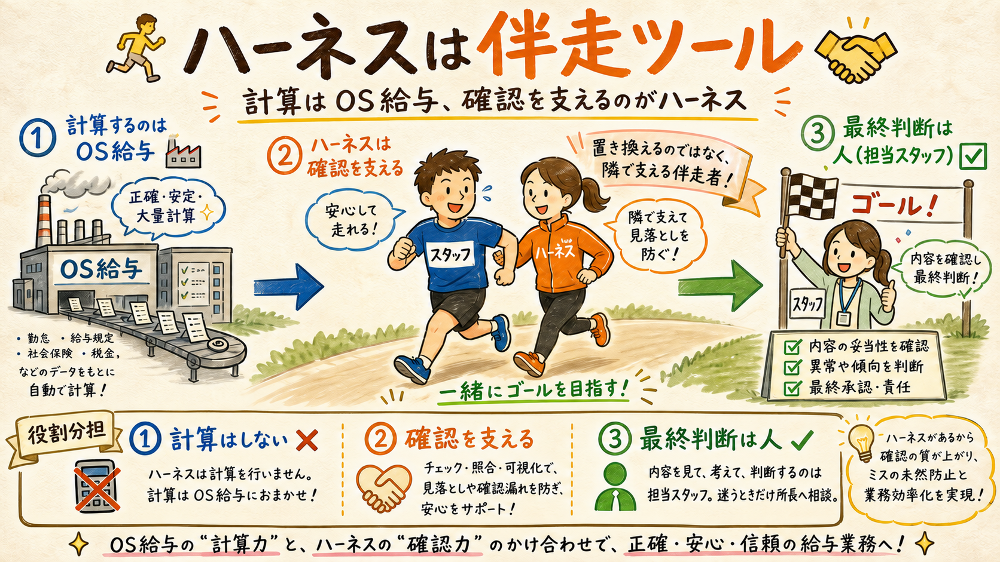
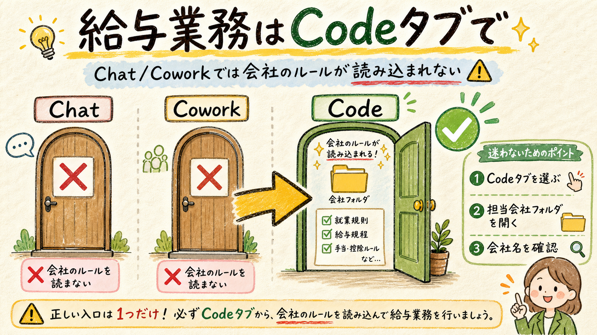
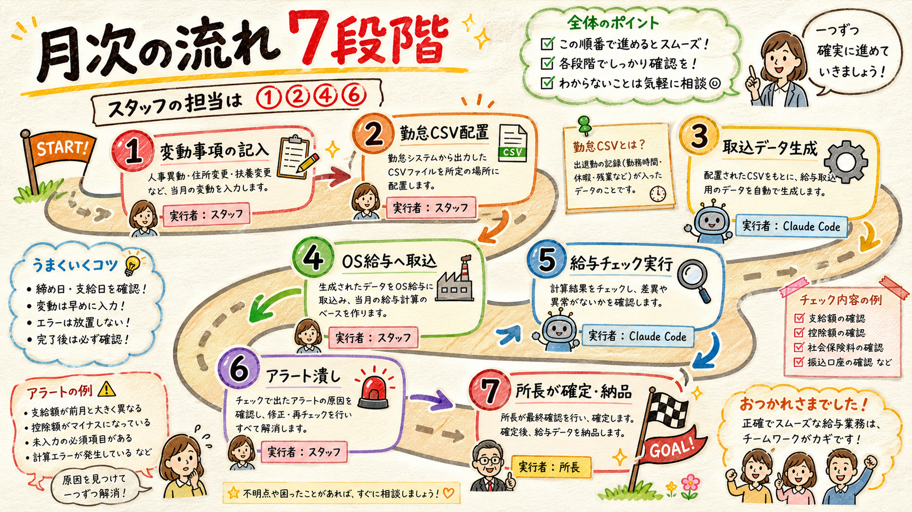
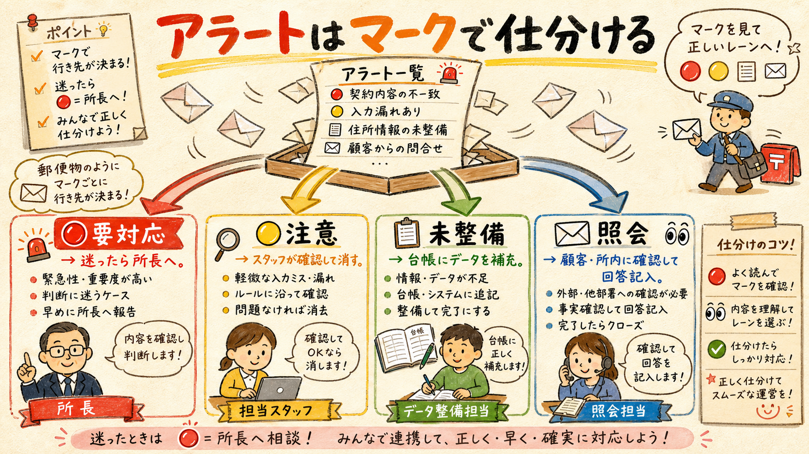

このページは、事務所スタッフが Claude Code（デスクトップアプリの「Code」タブ）で給与計算ハーネスを回すための手順書です。内部の仕組みを知らなくても、「決まった操作 → 日本語の指示が返る → 指示に従う」の流れで月次が完了するように書いています。
まず前提として、このツールが何をして・何をしないかを押さえます。

給与計算そのものは、これまでどおり給与計算ソフト（OS給与）が行います。ハーネスの役割は、その結果をチェック（レビュー）することと、人の記憶に頼りがちな管理（変動事項の反映確認・有給・随時改定）を台帳で支えることです。
位置づけは「自動化ツール」ではなく「伴走ツール」。最終確認は必ず人の目で行います。ハーネスは、その確認が漏れなく・楽にできるようにするための道具です。
| 担当 | やること |
|---|---|
| OS給与 | 給与計算の本体（支給額・控除額の計算） |
| ハーネス（Claude Code） | 計算結果のチェック、変動事項・有給・随時改定の台帳管理、アラート出力 |
| スタッフ（あなた） | 変動事項の記入、従業員台帳の作成・更新（CCに依頼）、勤怠データの配置、チェックの実行、アラートの確認、変動の確認記録、確定・納品 |
| 所長 | 判断に迷う事項の決定（エスカレーション対応）と、エンジン（scripts/）の保守。月次のルーティンや会社設定の更新には関与しない |
Claude デスクトップアプリには 3 つのタブがあり、給与業務で使えるのは 1 つだけです。

| タブ | 何ができるか | 給与業務で使う？ |
|---|---|---|
| Chat | ふつうの Claude との会話。会社フォルダのルール・チェック機能は一切読み込まれない | 使わない |
| Cowork | 長時間タスクの自動実行。こちらも会社フォルダの設定は読まない | 使わない |
| Code | 会社フォルダのルール（CLAUDE.md）・チェックスクリプト・安全装置がすべて有効 | ここで作業する |
Chat タブで給与の質問をしないでください。会社ごとのルールや台帳を読まない「素の Claude」が、それらしい一般論を答えてしまいます。給与に関する質問・作業は、必ず Code タブで会社フォルダを開いてから行います。
開き方は毎回同じです:
各会社フォルダを初めて開くときだけ、1 回だけの確認があります。
初めて会社フォルダを開くと、「このワークスペースを信頼しますか？」という確認画面が表示されます。ここで「信頼する」を選んでください。これはフォルダに入っているチェック機能・安全装置を有効にするための確認で、許可しないとハーネスが動きません。表示されるのは会社フォルダごとに初回の 1 回だけです。
1 社 1 フォルダが鉄則です。A 社の作業は A 社のフォルダで、B 社の作業は B 社のフォルダで行います。会社をまたいで作業すると、顧問先間の情報が混ざる事故につながります。
1 つの顧問先に法人が 2 つある場合（例: 医療法人と関連会社）は、同じフォルダの中に法人ごとの台帳「◯◯-payroll-db」が並んでいます。依頼するときは「Kwork の 8 月分をチェックして」のように法人名を添えてください。両方の法人が 🔴 ゼロになって初めて、その顧問先の月次は完了です。
アプリへのログインや契約プランは事務所側で設定済みです。確認画面が何度も出る・エラーで先に進めない場合は、自分で対処せず所長へ連絡してください。
1 か月の給与業務は、この 7 段階で回します（詳細の正本は docs/月次運用フロー.md）。

| 段階 | 実行者 | やること |
|---|---|---|
| [1] 随時 | スタッフ | 昇給・入退社・休職などの変動事項を変動事項入力シート.xlsx の該当タブ（入社／退職／休業／給与の変更／今月だけ／契約・税の変更／相談・その他）に記入する。来月以降に影響するタブは「内容を確認した人・確認日」も書く |
| [2] 締め後 | スタッフ | 勤怠ツール（OS勤怠）から出した勤怠 CSV を所定の場所に置く |
| [3] | Claude Code | 取込用データを生成する（スクリプトが自動で処理） |
| [4] | スタッフ | 生成されたデータを OS給与へ一括取込（マスタ変更は画面から入力） |
| [5] | Claude Code | 給与チェックを実行し、アラート一覧を出力する |
| [6] | スタッフ | アラート一覧_YYYY-MM.xlsx の 🔴 🟡 📋 と照会事項をすべて潰す（来月以降に効く変動は、内容を確認した担当者が承認欄に名前と日付を記録）。判断に迷うものだけ所長へ |
| [7] | 担当スタッフ | 🔴 ゼロを確認して確定・納品。納品用の給与計算報告書は CC に頼むと生成されるが、🔴 が 1 件でも残ると作られない |
入社・退職があった月は、次の 2 点だけ特別扱いです:
操作は「日本語で頼む」が基本です。コマンドは覚えなくて構いません。
Code タブで会社フォルダを開いたら、やってほしいことをそのまま日本語で入力します。例:
承認は入力シートの「内容を確認した人・確認日」列に自分の名前と日付を書けば、次の取込で台帳に記録されます（CC への口頭依頼は不要）。
Claude Code が対応するスクリプトを実行し、結果と次にやることを日本語で返します。参考までに、裏で動いている代表的なコマンドは次の 2 つです:
# 月次の給与チェック（all のほか payroll / ledger 単体も可） PAYROLL_DB=<台帳パス> ruby scripts/payroll_check.rb all 2026-08 # 変動事項シートの取込（v1/v2 自動判別。取込済IDの行は再取込しない） PAYROLL_DB=<台帳パス> python3 scripts/build_events_from_excel.py import 変動事項入力シート.xlsx
完了の合図は「ファイルができていること」です。「完了しました」という言葉ではなく、アラート一覧_YYYY-MM.xlsx が実際に生成・更新されていることを確認してから次の段階へ進みます。
チェック実行後のアラート一覧は、マークごとに対応が決まっています。

| マーク | 意味 | 誰が・どう対応する |
|---|---|---|
| 🔴 要対応 | 金額や手続きに影響がある指摘 | 内容を確認。自分で判断できるものだけ対応し、迷ったら所長へエスカレーション |
| 🟡 注意 | 読んで確認すればよい注意喚起 | スタッフが内容を確認して消し込む |
| 📋 未整備 | 台帳側のデータ不足 | スタッフが不足データを台帳・シートに補充する |
| 照会 | 顧客・所内に確認が必要な事項 | スタッフが確認して回答を記入し、変動事項シートにも登録。来月以降に影響する内容は、内容を確認した担当者の記録（名前＋日付）が承認欄に入るまで 🔴「承認待ち」が残る（承認者は担当スタッフでよい。迷うものだけ所長へ） |
次のどれかに当てはまったら、対応状況を「エスカレーション」にして所長へ回します。
迷ったら聞く、が正解です。私たちの仕事の価値は「人の目で確認したこと」の担保にあります。推測で進めることは、確認したことにはなりません。
事故につながるため、次の操作は禁止です。困ったら所長へ。
| 禁止事項 | 理由 |
|---|---|
| Chat / Cowork タブで給与業務をする | 会社のルール・チェック機能を通らない回答が返り、誤った処理の元になる |
エンジン（scripts/ 配下）を書き換える | チェックの仕組みそのもの。変更は所長の判断事項（スタッフの Claude Code からは編集が拒否される設定になっている。拒否されたら所長へ）。会社設定（config/company.yaml）は CC に頼んで更新してよく、値の解釈に迷うときだけ所長へ相談 |
| 退職者の台帳を削除する | 源泉徴収票・離職票の根拠として永続保管が必要。状態を「退職」に変えるだけにする |
| 別会社のフォルダで作業・実行する | 顧問先間の情報混在につながる。1 社 1 フォルダが鉄則 |
| 🔴 が残ったまま確定・納品する | [6] のアラート潰しが完了条件。🔴 が残っていると給与計算報告書は生成されない（仕組みで止まる） |